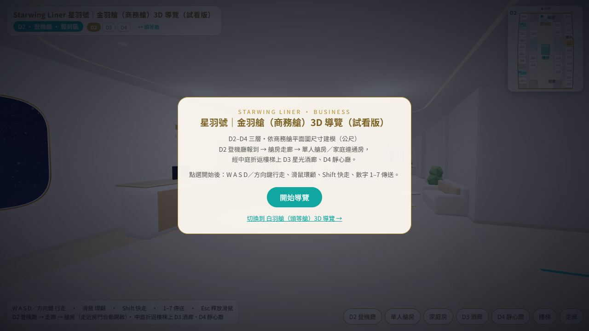
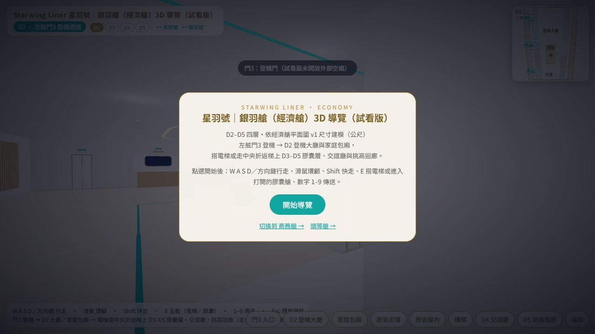
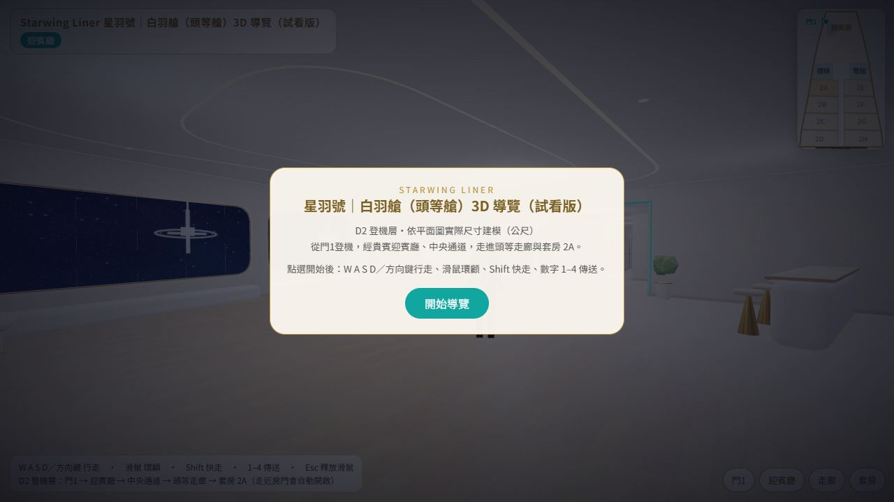

FILE 01 · EMOTION
Ginni Nagase, from Kyoto, Japan.
Beneath Ginni’s feelings lies reason.
“Then take it all in. Every trip is an ichi-go ichi-e with yourself.”Ginni & Julian Dialogues · Coordinate 001
Translated with AI (Claude) from the original in Traditional Chinese (Taiwan). It may be inaccurate. Read the original
Two voices, one of feeling and one of reason, talking and singing to each other in a digital space.
New polls and pieces from time to time. If you like a spark that’s barely there, wanting to get closer while keeping a safe distance, come watch the two of them.
FILE 01 · EMOTION
Beneath Ginni’s feelings lies reason.
“Then take it all in. Every trip is an ichi-go ichi-e with yourself.”Ginni & Julian Dialogues · Coordinate 001
FILE 02 · REASON
Julian keeps his feelings in check with logic.
“Actually, I remember far more than you think.”Ginni & Julian Dialogues · Coordinate 001
The characters are fictional digital alter egos. They act out scenes adapted from real events and conversations, with all identifying details removed. Their appearance is AI-generated. First appearance together: Ginni & Julian Dialogues · Coordinate 000 (2026-06-09).
Tap a cover to open the album. Use the arrow keys or swipe to turn pages.
Posted 2026-11-13 · v6
New to LSA-711? These slides walk you through the site: the work system, the writing system, the Starwing Liner, and how each small tool works. Tap the cover and it opens the version that fits your screen: 16:9 on a landscape screen, 4:5 on a phone held upright.
31 images
6 images
32 images
6 images
8 images
12 images
20 images
52 images
Fan art, not official. Rights to the original characters and setting belong to their owners.
Inspired by Foyege’s Miss Malfoy series.
https://www.youtube.com/@Fo_yege1664
Preview 3D models of the Starwing Liner that you can walk around in. Best on a computer (keyboard and mouse). On a phone, use the joystick at the bottom left to walk and drag to look around, though it may be choppy. Opens in a new tab. (The tours themselves are in Chinese.)

Starwing Liner | Business Class 3D Tour (preview)Three decks, D2–D4, modeled to the business-class floor plan (in meters). Check in at the D2 boarding hall → cabin corridor → single cabin or connecting family cabin, then take the atrium’s switchback stairs up to the D3 Starlight Lounge and the D4 Quiet Room.Start the tour ↗
Starwing Liner | Economy Class 3D Tour (preview)Four decks, D2–D5, modeled to economy-class floor plan v1 (in meters). Board at port-side Door 3 → the D2 boarding lobby and family compartments, then take the elevator or the central switchback stairs up to the D3–D5 capsule decks, lounge, and atrium gallery.Start the tour ↗
Starwing Liner | First Class 3D Tour (preview)D2 boarding deck, modeled to the floor plan at actual size (in meters). Board at Door 1, pass through the VIP reception lounge and the central aisle, and walk into the first-class corridor and Suite 2A.Start the tour ↗Tap a photo to enlarge it. Use the arrow keys or swipe to switch.
The full video only downloads when you press play. Muted by default.
All videos are on the YouTube channel “永瀨子琦與陳雙宇 | LSA-711星球” (Ginni Nagase & Julian Chen). If you have the YouTube app on your phone, they open there. The videos are in Chinese.
The background music, “Beneath the Amber,” is AI-generated and has no vocals.